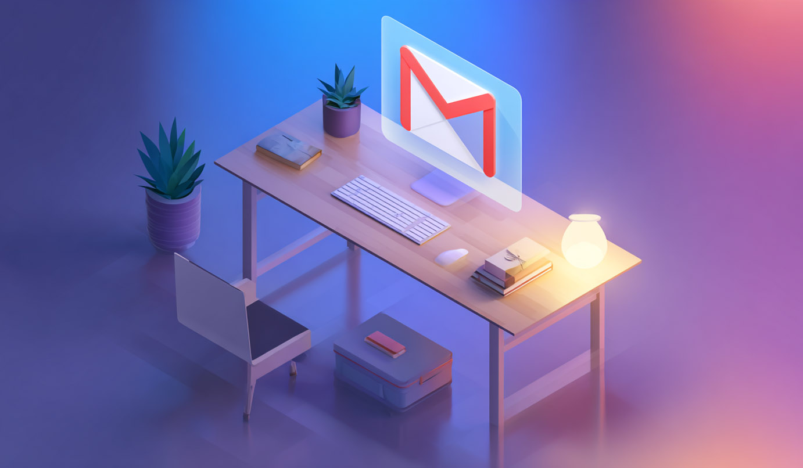
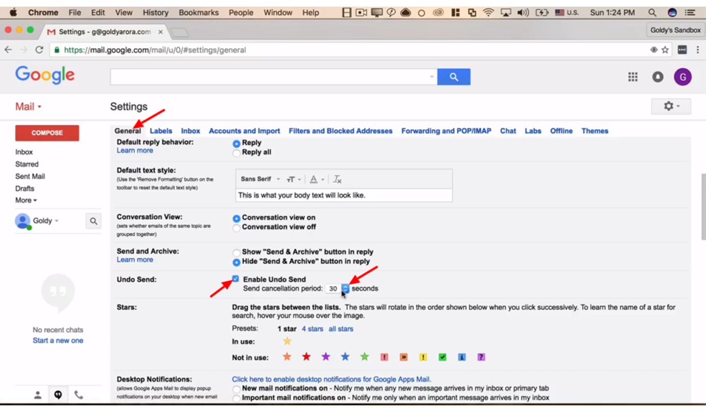
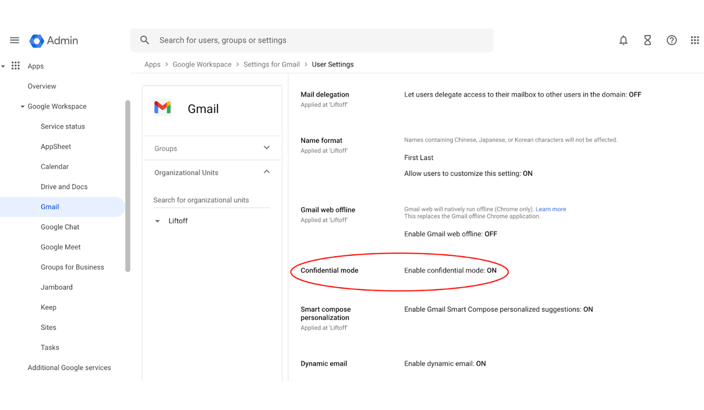
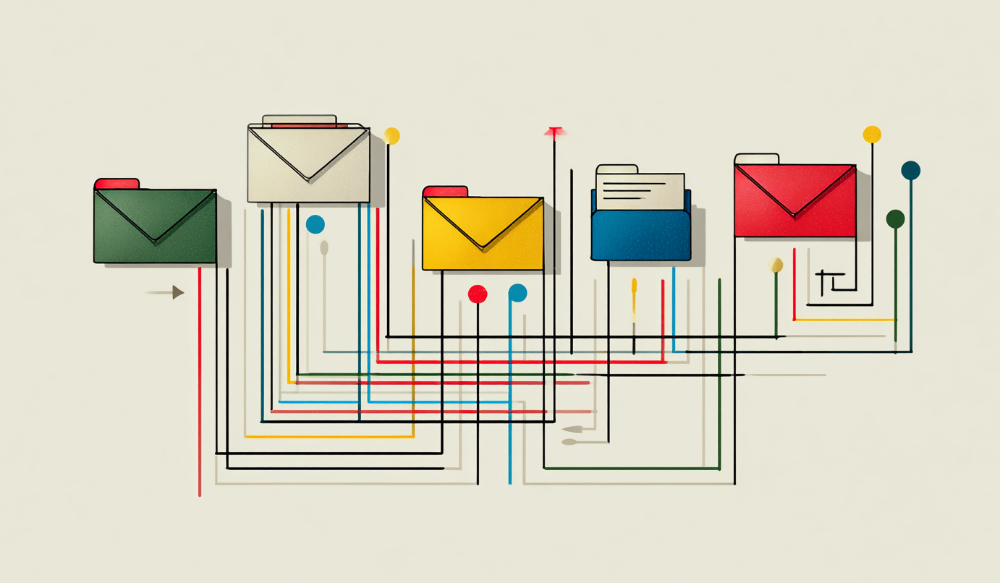

July 13, 2025
12 Gmail Hacks You'll Wish You Knew Sooner

Inbox overflowing? Notifications buzzing every minute? It's like your email account has a mind of its own—and it's not on your side. But before you throw your laptop out the window, try these 12 ruthless Gmail hacks that will transform your daily digital chaos into streamlined, stress-free productivity.
No more endless scrolling. No more missed deadlines. And best of all, no more embarrassing “Oops, I forgot the attachment” moments. Let's dive in.
1. Undo Send - Your 30-Second Safety Net
Picture this: you hit “Send,” only to realize you've somehow cc'd your entire company on a snarky remark about Bob from accounting. Nightmare, right?
Enabling Undo Send gives you a 5-30 second window to retract that email before it ever leaves Gmail's servers. It's like having a rewind button for your mistakes.
How to enable:
Go to ⚙️ Settings → See all settings → General. Scroll down to “Undo Send,” pick 30 seconds, and hit “Save Changes.” Breathe easy—you've got backup.

2. Mass-Delete Promotions - Nuking the Noise
That “Promotions” tab was supposed to group ads and newsletters—now it looks like a graveyard of unopened coupons you'll never use. Rather than clicking 100 promos individually, let Gmail do the heavy lifting.
Simply type category:promotions OR unsubscribe into the search
bar, press Enter, tick the top checkbox, select “All conversations,” and click
🗑️ Delete. In seconds, your inbox feels like new again.
If you're wary of losing receipts—archive instead by clicking 📥 Archive, which hides emails from view but keeps them searchable.
3. Confidential Mode - Lock Down Sensitive Content
Need to send bank statements, NDAs, or personal files? Confidential Mode prevents forwarding, copying, printing, and downloading—so sensitive info stays that way. While composing, click the little lock-and-clock icon at the bottom of the compose window. Choose an expiration date (1 day to 5 years) and even require an SMS passcode for extra security.
After the expiry, the email simply becomes unreadable—no digital footprint left behind.

4. Offline Gmail - Work Anywhere, No Wi-Fi Needed
Whether you're stuck underground, on a long flight, or in a café with spotty Wi-Fi, Offline Gmail lets you read, search, and even draft replies that send automatically once you're back online.
Head to ⚙️ Settings → Offline, tick “Enable offline mail,” pick your sync window (7/30/90 days), then click “Save Changes.” Now, Gmail works like a local app—without the internet hiccups.
5. Schedule Send - Time-Shift Your Emails
Ever fired off emails at 2 a.m. to look busy? Yeah, we've all done it. Instead, draft now and schedule later.
Draft your message as usual, click the ▼ arrow next to “Send,” select “Schedule send,” and choose your target date/time. Whether you want to hit someone's inbox at 9 a.m. or maintain “always on” mystique at midnight—you're covered.
6. Snooze - Hit Pause on Distractions
Not every email demands immediate attention. Snoozing lets you push low-priority messages out of sight until you're ready to handle them.
Hover over the message, click the clock icon, then choose a preset (Later today, This weekend, Next week) or set a custom date/time. It vanishes—only to return when it matters.
7. Labels & Filters - Automated Filing System
Why manually file every email when Gmail can do it for you? Labels are like folders but more powerful: you can apply multiple labels to a single message.
Create a new label (Sidebar → More → Create new label). Then open an email from the sender you want to filter, click ⋮ → Filter messages like these, select your label, and choose “Skip Inbox.” Presto—future emails auto-filed.

8. Templates - Two-Click Boilerplate
If you're still copy-pasting the same reply dozens of times, you're wasting minutes every day. Gmail Templates store your common responses so you can insert them instantly.
Setup:
- Go to ⚙️ Settings → Advanced, enable “Templates,” then Save.
- Compose your go-to message—invoicing note, leadership update, whatever.
- Click ⋮ → Templates → Save draft as template → Save as new template.
Next time you compose, just click ⋮ → Templates → [Your template], tweak any details, and hit Send.
9. Archive vs Delete - Keep It Accessible
Archiving removes emails from your inbox without deleting them—perfect for receipts, reference materials, or random threads you might need later.
Deleting sends mail to Trash and permanently purges it after 30 days (and it counts toward your storage quota until it's fully deleted). When in doubt, archive.
10. “+tags” & Aliases - Inbox Triage on Autopilot
Gmail ignores anything after a “+” in your address. Use this to categorize sign-ups, track leaks, or filter specific senders.
For example: use you+news@gmail.com for newsletters,
you+shop@gmail.com for e-commerce sites. Then create filters
(to:you+shop@gmail.com) → Apply label → Skip Inbox. Zero extra accounts
required.
11. One-Click Unsubscribe - Break Free from Spam
Fed up with hidden unsubscribe links in tiny font at the bottom of emails? Gmail surfaces a gray “Unsubscribe” button next to the sender address when available. One click, and you're off their list—no more hunting.
12. Keyboard Shortcuts - Cruise Through Your Inbox
Clicking is for amateurs. Enable shortcuts (⚙️ Settings → General → Keyboard shortcuts → On) and memorize:
- C: Compose
- Ctrl/⌘ + Enter: Send
- /: Search mail
- Shift + I: Mark as read
- D: Compose in new tab
- Shift + Ctrl + B: Add Bcc
You'll click less and conquer more—your inbox becomes an extension of
your will.
These aren't gimmicks—they're your survival kit. Implement all 12 today and watch Gmail bend to your schedule, not the other way around.